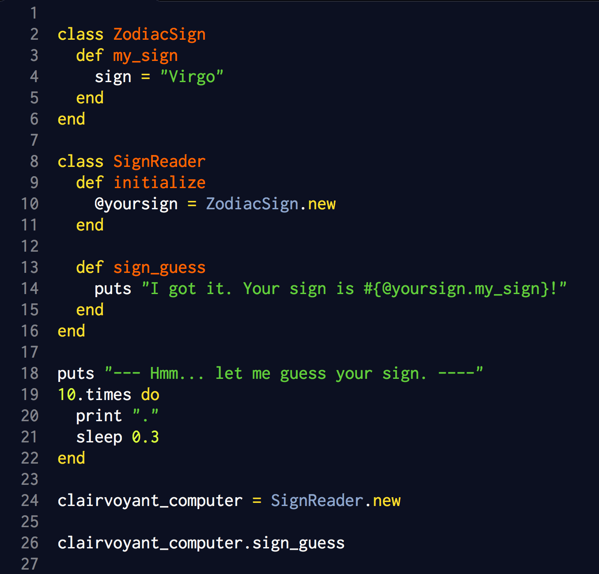

Classes are an easy way to create large numbers of objects in ruby. Instead of defining separate methods for a group of objects, create a class that contains all the methods that you want to perform on the objects. Then, all you need to do is create the objects and run them through the class in order to perform the desired methods!
Confused? Let’s create an example that illustrates how classes work in ruby. But first, some basic definitions: it’s important to understand the difference between local and instance variables before jumping into classes. In ruby, an instance of a class is just another way of saying something is an object of that class. A string, for example, can be thought of as an instance of the class String. In the same manner, an instance variable is just an object of a particular class. It can be accessed by any method in the class. Instance variables are easily recognizable because they begin with @. A local variable, on the other hand, is only defined and relevant inside its own method. It can’t be accessed outside of its method. Let’s look at some examples that will help to clarify this.
We’ll design a cute little program that will tell you your sign, and at the same time demonstrate ruby classes, and instance versus local variables. The part of the code from puts "--- Hmm... let me guess your sign. ----" … 10.times do is just a little fun thing that I picked up from the DBC challenge on accessing attributes, that makes it look like the computer is ‘thinking hard’ to guess your sign.
The program below has two classes: ZodiacSign (note the CamelCase, which is best practice for ruby class names) and SignReader. The ZodiacSign class is basically a ‘setter’ class, as its only function at this time is to define an instance variable, @sign, equal to Virgo, my zodiac sign. I hear Virgos like to keep things organized. Seems like a good quality for an aspiring developer ; )
The SignReader class does the majority of the output work here. SignReader is composed of two instance methods, initialize and sign_guess. You can follow a demonstration of the power of instance variables by tracing the output of this program: The output phrase “Your sign is Virgo!” gets its data by virtue of the instance variable @yoursign, which is able to transfer its value across methods. If you were to remove the @ sign from @yoursign (thus turning it into a local variable), the program would not run and you would raise a NameError exception (undefined local variable).
Note that the sign variable is a local, not an instance, variable, and yet the program still works. This is because SignReader#initialize sets @yoursign equal to ZodiacSign.new, which in turn runs the instance method my_sign, which in turn sets up this local variable. The instance method can be reached across classes because SignReader is simply creating a new instance of ZodiacSign. You could make the local variable sign and instance variable @sign, but it’s not necessary for the program to work. Neat, right?
And when we type the literal interpolation #{@yoursign.my_sign}, we are effectively saying to the computer “thanks to the SignReader#initialize method, you know that the local variable sign is defined in the instance method my_sign - defined in a totally different class - and you can access this even though it’s in a different class, because @yoursign can be called, read, and accessed anywhere within the SignReader class.”
When we create a local variable called clairvoyant_computer, outside both of these classes, that is set to a new instance of the class SignReader, we can behold all the power and magic of instance variables and methods, as we reach all the way into ZodiacSign and get some info, even though there’s no mention of ZodiacSign, my_sign, or Virgo in the driver code that runs the program (clairvoyant_computer.sign_guess).
As a little bonus, here’s something interesting about the initialize method that I learned from this exercise: I originally named ZodiacSign#my_sign ZodiacSign#initialize, since its main function is to establish a variable called sign, and to set that variable equal to something (in this case, a string, “Virgo”). But when I tried to access sign via ZodiacSign#initialize, I raised a NoMethodError exception, saying that 'initialize' is a private method. This reminded me of a helpful page I read in Pine's Learn to Program (p. 107), where he talks about new vs. initialize, and he mentions that you never call initialize because the method new "inherently" calls initialize... it's somewhat circular and confusing, but long story short, I realized that I need to name the method in ZodiacSign something besides initialize in order to access it from another class.